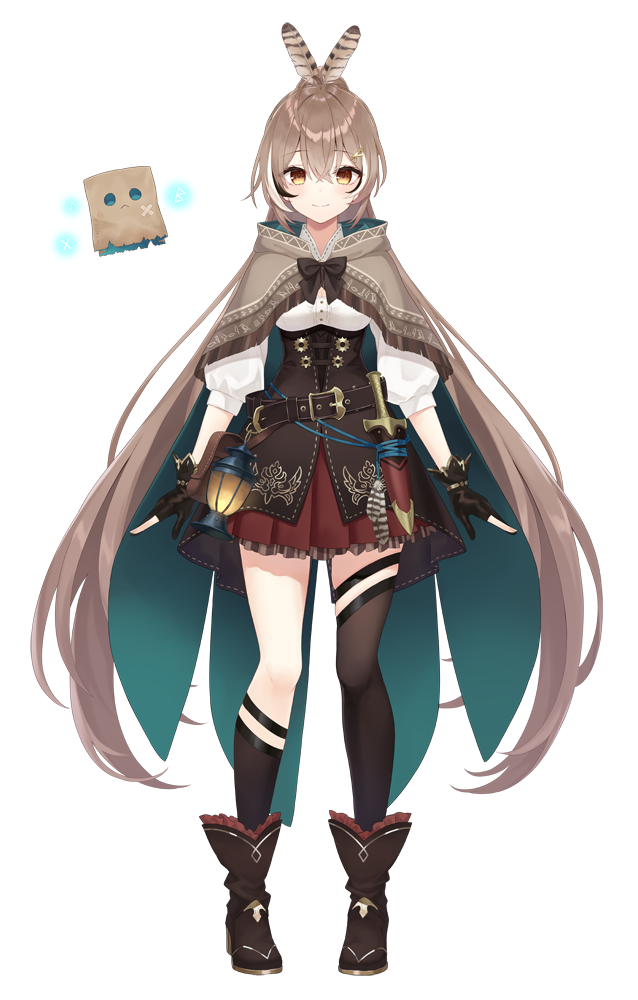

Calliope Mori
 The Grim Reaper's first apprentice. Due to modern medical care causing a decline in the reaping
business, Calliope decided to become a VTuber to harvest souls instead. It seems that the
ascended souls of the people who are vaporized by the wholesome interactions between VTubers
go to her as well. That being said, despite the image her hardcore vocals and manner of speech
gives off, she's actually a gentle-hearted girl who cares greatly for her friends.
The Grim Reaper's first apprentice. Due to modern medical care causing a decline in the reaping
business, Calliope decided to become a VTuber to harvest souls instead. It seems that the
ascended souls of the people who are vaporized by the wholesome interactions between VTubers
go to her as well. That being said, despite the image her hardcore vocals and manner of speech
gives off, she's actually a gentle-hearted girl who cares greatly for her friends.
Takanashi Kiara
 An idol whose dream is to become the owner of a fast food chain. Kiara is a phoenix, not a chicken
or turkey. (Very important) She burns brightly, working herself to the bone since she'll just be
reborn from her ashes anyway.
An idol whose dream is to become the owner of a fast food chain. Kiara is a phoenix, not a chicken
or turkey. (Very important) She burns brightly, working herself to the bone since she'll just be
reborn from her ashes anyway.
Amelia Watson
 Amelia heard strange rumors online surrounding hololive: talking foxes, magical squirrels,
superhuman dogs, and more. Soon after beginning her investigation on hololive, and just out
of interest, she decided to become an idol herself! She loves to pass her time training her
reflexes with FPS games, and challenging herself with puzzle games. "It's elementary, right?"
Amelia heard strange rumors online surrounding hololive: talking foxes, magical squirrels,
superhuman dogs, and more. Soon after beginning her investigation on hololive, and just out
of interest, she decided to become an idol herself! She loves to pass her time training her
reflexes with FPS games, and challenging herself with puzzle games. "It's elementary, right?"
Ninomae Ina'nis
 Despite her looks, Ina'nis is actually a priestess of the Ancient Ones. One day, she picked up a
strange book and then started to gain the power of controlling tentacles. To her, tentacles are
just a part in her ordinary life; it has never been a big deal for her. However, her girly mind
does want to get them dressed up and stay pretty. After gaining power, she started hearing
Ancient Whispers and Revelations. Hence, she began her VTuber activities to deliver random
sanity checks on humanity, as an ordinary girl.
Despite her looks, Ina'nis is actually a priestess of the Ancient Ones. One day, she picked up a
strange book and then started to gain the power of controlling tentacles. To her, tentacles are
just a part in her ordinary life; it has never been a big deal for her. However, her girly mind
does want to get them dressed up and stay pretty. After gaining power, she started hearing
Ancient Whispers and Revelations. Hence, she began her VTuber activities to deliver random
sanity checks on humanity, as an ordinary girl.
Gawr Gura
 A descendant of the Lost City of Atlantis, who swam to Earth while saying, "It's so boring down
there LOLOLOL!" Gura bought her clothes (and her shark hat) in the human world and she really
loves them. In her spare time, she enjoys talking to marine life.
A descendant of the Lost City of Atlantis, who swam to Earth while saying, "It's so boring down
there LOLOLOL!" Gura bought her clothes (and her shark hat) in the human world and she really
loves them. In her spare time, she enjoys talking to marine life.
IRyS
 IRyS, a half-demon, half-angel also known as a Nephilim, once brought hope to "The Paradise" during the ancient age. Her full name is ███████ Irys. This current era, riddled with despair and desperation, has brought upon her second awakening. She has arrived to deliver hope, with her feelings put into her lyrics and songs, and determination in her voice.
Though she tends to retain her Nephilim form, she is still quite young within her race. With emotion and "other factors," it is possible that her form may lean to either side. When that occurs, she bears a brief change in her appearance.
She does not speak of the events that preceded her second awakening. She faces ever forward, perhaps because she is Hope Incarnate, though no one knows for sure. Or could it be...
"The future is not what helps people; the future is made with our own hands.
Salvation is hypocrisy. If people know they are to be saved, they simply will not try.
From the depths of despair: a glimmer of light, the warmth of recovery.
IRyS, a half-demon, half-angel also known as a Nephilim, once brought hope to "The Paradise" during the ancient age. Her full name is ███████ Irys. This current era, riddled with despair and desperation, has brought upon her second awakening. She has arrived to deliver hope, with her feelings put into her lyrics and songs, and determination in her voice.
Though she tends to retain her Nephilim form, she is still quite young within her race. With emotion and "other factors," it is possible that her form may lean to either side. When that occurs, she bears a brief change in her appearance.
She does not speak of the events that preceded her second awakening. She faces ever forward, perhaps because she is Hope Incarnate, though no one knows for sure. Or could it be...
"The future is not what helps people; the future is made with our own hands.
Salvation is hypocrisy. If people know they are to be saved, they simply will not try.
From the depths of despair: a glimmer of light, the warmth of recovery.
Ceres Fauna
 A member of the Council and the Keeper of "Nature," the second concept created by the Gods.
She has materialized in the mortal realm as a druid in a bid to save nature.
She has Kirin blood flowing in her veins, and horns that are made out of the branches of a certain tree; they are NOT deer antlers.
"Nature" refers to all organic matter on the planet except mankind.
It is long said that her whispers, as an avatar of Mother Nature, have healing properties. Whether or not that is true is something only those who have heard them can say.
While she is usually affable, warm, and slightly mischievous, any who anger her will bear the full brunt of Nature's fury.
A member of the Council and the Keeper of "Nature," the second concept created by the Gods.
She has materialized in the mortal realm as a druid in a bid to save nature.
She has Kirin blood flowing in her veins, and horns that are made out of the branches of a certain tree; they are NOT deer antlers.
"Nature" refers to all organic matter on the planet except mankind.
It is long said that her whispers, as an avatar of Mother Nature, have healing properties. Whether or not that is true is something only those who have heard them can say.
While she is usually affable, warm, and slightly mischievous, any who anger her will bear the full brunt of Nature's fury.
Ouro Kronii
 A member of the Council and the Warden of "Time," the third concept birthed by the Gods and the one most intrinsically linked with mankind.
None may escape the sands of time and, indeed, most men do not even wish to be freed from her captivity. She picked up the blades almost as a reflex action of sorts, and seems to be enjoying it. Her quiet, aloof personality has never changed over the ages, but she has developed a little bit of haughtiness and sadistic tendencies along the way...
Originally, the concept of time was but a cog in the wheel, one which only functioned in tandem with others.
Eventually, humans went on to give time individual meanings such as dawn and dusk, making it universal. The humans became enslaved to Time in return for empowering her. In her present form, she has become a sadistic, prideful warden.
A member of the Council and the Warden of "Time," the third concept birthed by the Gods and the one most intrinsically linked with mankind.
None may escape the sands of time and, indeed, most men do not even wish to be freed from her captivity. She picked up the blades almost as a reflex action of sorts, and seems to be enjoying it. Her quiet, aloof personality has never changed over the ages, but she has developed a little bit of haughtiness and sadistic tendencies along the way...
Originally, the concept of time was but a cog in the wheel, one which only functioned in tandem with others.
Eventually, humans went on to give time individual meanings such as dawn and dusk, making it universal. The humans became enslaved to Time in return for empowering her. In her present form, she has become a sadistic, prideful warden.
Nanashi Mumei

A member of the Council and the Guardian of "Civilization," a concept crafted by mankind.
As a living embodiment of the sum of mankind's efforts—the mark that humans have left on the world—she is far removed from her fellow members, as well as other lifeforms. Due to not being created by the Gods, she was free to choose her own appearance, and decided to make herself owl-like, after the bird that symbolizes wisdom.
She is gentle, wise, and an unbelievably hard worker. As a well-traveled vagabond, she is blessed with a wealth of knowledge of the world. She has seen, heard, and experienced so many things that she has forgotten most of them, one of them being her own name.
For some reason, she seems to project a rather pitiable aura. Perhaps this is in part thanks to the loneliness she has often felt in her perennial travels. That is what gave her the idea of making her own friend out of a material that was indispensable to the development of human civilization: paper.
Hakos Baelz
 A member of the Council and the very concept of Chaos, birthed by the world, itself.
The Gods appointed her Chairperson of the Council, but she mostly takes a hands-off approach as she has yet to accept the decision, much like her fellow members. That said, all of them have no intention of contending; instead to obey.
Her mouse-like appearance has deceived many a fool who fails to realize that mice are the harbingers of chaos.
Also of note is her wild smile, which she often flashes in her frequent romps.
Chaos is confusion and disarray, it is fortune and tragedy, and it is freedom from all the logic and inherent nature of life.
She believes that rules are not the be-all and end-all, which is why she has come to break them all.
Watching the aftermath is her greatest joy, and so she remains a bystander to the destruction caused by mayhem.
A member of the Council and the very concept of Chaos, birthed by the world, itself.
The Gods appointed her Chairperson of the Council, but she mostly takes a hands-off approach as she has yet to accept the decision, much like her fellow members. That said, all of them have no intention of contending; instead to obey.
Her mouse-like appearance has deceived many a fool who fails to realize that mice are the harbingers of chaos.
Also of note is her wild smile, which she often flashes in her frequent romps.
Chaos is confusion and disarray, it is fortune and tragedy, and it is freedom from all the logic and inherent nature of life.
She believes that rules are not the be-all and end-all, which is why she has come to break them all.
Watching the aftermath is her greatest joy, and so she remains a bystander to the destruction caused by mayhem.
Tsukumo Sana
A member of the Council and the Speaker of "Space," the very first concept created by
the Gods. After being materialized in the mortal realm, she began researching astrology
in earnest for one particular reason. However, she soon stumbled unknowingly upon the
Forbidden Truth, and was turned into an apostle for the Ancient Ones. "Space" refers
not only to this universe we live in, but all dimensions and matter to exist. It is a
concept unbridled by definition, and one that continues to grow in scope limitlessly.
As it is yet to be fully explored by man, her seemingly strange behavior and speech can
be explained away with a simple, "Humanity simply isn't yet ready to understand."